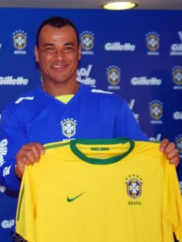

The profile
Cafu
Cafu was born in Itaquaquecetuba, near São Paulo, and worked his way into senior football with São Paulo FC. He developed into an attacking right-back whose stamina let him cover the full length of the pitch.
After winning major titles with São Paulo, he played for Roma and AC Milan. His overlapping runs gave teammates an outlet on the right, while his recovery speed helped him defend after joining attacks. He became a steady presence for Brazil across four World Cups.
Cafu appeared in the 1994, 1998 and 2002 World Cup finals, the only player to feature in three. He came on during Brazil's 1994 win over Italy, finished runner-up to France in 1998 and captained the 2002 team to victory over Germany. Lifting the trophy in Yokohama capped a tournament in which Brazil won all seven matches.
1994USA
Champion
Round of 16 Brazil1 : 0United States
- BEBETO72′
Brazilhome
Starting lineup
- TAFFAREL
- JORGINHO
- ALDAIR
- MARCIO SANTOS
- MAURO SILVA
- DUNGA
- ZINHO
- LEONARDO
- MAZINHO
- BEBETO
- ROMÁRIO
Substitutions
- 68′CAFU on · ZINHO off
United Statesaway
Starting lineup
- Tony MEOLA
- Thomas DOOLEY
- Marcelo BALBOA
- Paul CALIGIURI
- Fernando CLAVIJO
- Alexi LALAS
- Hugo PEREZ
- Tab RAMOS
- Cobi JONES
- Michael SORBER
- Earnie STEWART
Substitutions
- 45′Eric WYNALDA on · Tab RAMOS off
- 66′Roy WEGERLE on · Hugo PEREZ off
Quarterfinal Netherlands2 : 3Brazil
- Dennis BERGKAMP64′
- Aron WINTER76′
- ROMÁRIO53′
- BEBETO63′
- BRANCO81′
Netherlandshome
Starting lineup
- Ed DE GOEY
- Ronald KOEMAN
- Stan VALCKX
- Frank RIJKAARD
- Rob WITSCHGE
- Jan WOUTERS
- Wim JONK
- Aron WINTER
- Marc OVERMARS
- Dennis BERGKAMP
- Peter VAN VOSSEN
Substitutions
- 54′Bryan ROY on · Peter VAN VOSSEN off
- 64′Ronald DE BOER on · Frank RIJKAARD off
Brazilaway
Starting lineup
- TAFFAREL
- JORGINHO
- BRANCO
- ALDAIR
- MARCIO SANTOS
- MAURO SILVA
- DUNGA
- ZINHO
- MAZINHO
- BEBETO
- ROMÁRIO
Substitutions
- 80′RAI on · MAZINHO off
- 89+59′CAFU on · BRANCO off
Final Brazil0 : 0Italy
Brazilhome
Starting lineup
- TAFFAREL
- JORGINHO
- BRANCO
- ALDAIR
- MARCIO SANTOS
- MAURO SILVA
- DUNGA
- ZINHO
- MAZINHO
- BEBETO
- ROMÁRIO
Substitutions
- 21′CAFU on · JORGINHO off
- 106′VIOLA on · ZINHO off
Italyaway
Starting lineup
- Gianluca PAGLIUCA
- Antonio BENARRIVO
- Paolo MALDINI
- Franco BARESI
- Roberto MUSSI
- Demetrio ALBERTINI
- Dino BAGGIO
- Nicola BERTI
- Roberto DONADONI
- Roberto BAGGIO
- Daniele MASSARO
Substitutions
- 34′Luigi APOLLONI on · Roberto MUSSI off
- 95′Alberico EVANI on · Dino BAGGIO off
1998France
Runner-up
Group A Brazil2 : 1Scotland
- CESAR SAMPAIO5′
- Tom BOYD74′ · own goal
- John COLLINS38′ · pen.
Brazilhome
Starting lineup
- TAFFAREL
- CAFU
- ALDAIR
- JUNIOR BAIANO
- ROBERTO CARLOS
- CESAR SAMPAIO
- GIOVANNI
- DUNGA
- RONALDO
- RIVALDO
- BEBETO
Substitutions
- 45+1′LEONARDO on · GIOVANNI off
- 72′DENILSON on · BEBETO off
Scotlandaway
Starting lineup
- Jim LEIGHTON
- Tom BOYD
- Colin CALDERWOOD
- Colin HENDRY
- Craig BURLEY
- John COLLINS
- Paul LAMBERT
- Christian DAILLY
- Kevin GALLACHER
- Gordon DURIE
- Darren JACKSON
Substitutions
- 78′Billy McKINLAY on · Darren JACKSON off
- 84′Tosh McKINLAY on · Christian DAILLY off
Group A Brazil3 : 0Morocco
- RONALDO9′
- RIVALDO45+2′
- BEBETO50′
Brazilhome
Starting lineup
- TAFFAREL
- CAFU
- ALDAIR
- JUNIOR BAIANO
- ROBERTO CARLOS
- CESAR SAMPAIO
- DUNGA
- LEONARDO
- RONALDO
- RIVALDO
- BEBETO
Substitutions
- 68′DORIVA on · CESAR SAMPAIO off
- 72′EDMUNDO on · BEBETO off
- 87′DENILSON on · RIVALDO off
Moroccoaway
Starting lineup
- Driss BEN ZEKRI
- Abdelilah SABER
- Abdelkarim EL HADRIOUI
- Youssef ROSSI
- Noureddine NAYBET
- Mustafa HADJI
- Said CHIBA
- Youssef CHIPPO
- Taher EL KHALEJ
- Abdeljalil HADDA
- Salaheddine BASSIR
Substitutions
- 76′Gharib AMZINE on · Said CHIBA off
- 76′Lahcen ABRAMI on · Abdelilah SABER off
- 88′Ali EL KHATTABI on · Abdeljalil HADDA off
Group A Norway2 : 1Brazil
- Tore Andre FLO83′
- Kjetil REKDAL89′ · pen.
- BEBETO78′
Norwayhome
Starting lineup
- Frode GRODAS
- Ronny JOHNSEN
- Henning BERG
- Stig BJORNEBYE
- Dan EGGEN
- Oyvind LEONHARDSEN
- Kjetil REKDAL
- Havard FLO
- Vidar RISETH
- Roar STRAND
- Tore Andre FLO
Substitutions
- 45+1′Erik MYKLAND on · Roar STRAND off
- 68′Ole Gunnar SOLSKJAER on · Havard FLO off
- 79′Jostein FLO on · Vidar RISETH off
Brazilaway
Starting lineup
- TAFFAREL
- CAFU
- JUNIOR BAIANO
- ROBERTO CARLOS
- GONCALVES
- DUNGA
- LEONARDO
- DENILSON
- RONALDO
- RIVALDO
- BEBETO
Substitutions
- No substitutions
Round of 16 Brazil4 : 1Chile
- CESAR SAMPAIO11′
- CESAR SAMPAIO26′
- RONALDO45+3′ · pen.
- RONALDO72′
- Marcelo SALAS70′
Brazilhome
Starting lineup
- TAFFAREL
- CAFU
- ALDAIR
- JUNIOR BAIANO
- ROBERTO CARLOS
- CESAR SAMPAIO
- DUNGA
- LEONARDO
- RONALDO
- RIVALDO
- BEBETO
Substitutions
- 65′DENILSON on · BEBETO off
- 78′GONCALVES on · ALDAIR off
Chileaway
Starting lineup
- Nelson TAPIA
- Ronald FUENTES
- Javier MARGAS
- Pedro REYES
- Miguel RAMIREZ
- Mauricio AROS
- Clarence ACUNA
- Jose SIERRA
- Fernando CORNEJO
- Ivan ZAMORANO
- Marcelo SALAS
Substitutions
- 45+1′Fabian ESTAY on · Jose SIERRA off
- 45+1′Marcelo VEGA on · Miguel RAMIREZ off
- 80′Luis MUSRRI on · Clarence ACUNA off
Quarterfinal Brazil3 : 2Denmark
- BEBETO10′
- RIVALDO25′
- RIVALDO59′
- Martin JORGENSEN2′
- Brian LAUDRUP50′
Brazilhome
Starting lineup
- TAFFAREL
- CAFU
- ALDAIR
- JUNIOR BAIANO
- ROBERTO CARLOS
- CESAR SAMPAIO
- DUNGA
- LEONARDO
- RONALDO
- RIVALDO
- BEBETO
Substitutions
- 64′DENILSON on · BEBETO off
- 71′EMERSON on · LEONARDO off
- 87′ZE ROBERTO on · RIVALDO off
Denmarkaway
Starting lineup
- Peter SCHMEICHEL
- Marc RIEPER
- Jes HOGH
- Jan HEINTZE
- Thomas HELVEG
- Soren COLDING
- Allan NIELSEN
- Michael LAUDRUP
- Brian LAUDRUP
- Peter MOLLER
- Martin JORGENSEN
Substitutions
- 45+1′Stig TOFTING on · Allan NIELSEN off
- 66′Ebbe SAND on · Peter MOLLER off
- 87′Michael SCHJONBERG on · Thomas HELVEG off
Final Brazil0 : 3France
- Zinedine ZIDANE27′
- Zinedine ZIDANE45+1′
- Emmanuel PETIT90+3′
Brazilhome
Starting lineup
- TAFFAREL
- CAFU
- ALDAIR
- JUNIOR BAIANO
- CESAR SAMPAIO
- ROBERTO CARLOS
- DUNGA
- LEONARDO
- RONALDO
- RIVALDO
- BEBETO
Substitutions
- 45+1′DENILSON on · LEONARDO off
- 73′EDMUNDO on · CESAR SAMPAIO off
Franceaway
Starting lineup
- Fabien BARTHEZ
- Bixente LIZARAZU
- Youri DJORKAEFF
- Marcel DESAILLY
- Lilian THURAM
- Frank LEBOEUF
- Didier DESCHAMPS
- Zinedine ZIDANE
- Christian KAREMBEU
- Stephane GUIVARCH
- Emmanuel PETIT
Substitutions
- 57′Alain BOGHOSSIAN on · Christian KAREMBEU off
- 66′Christophe DUGARRY on · Stephane GUIVARCH off
- 74′Patrick VIEIRA on · Youri DJORKAEFF off
2002Korea + Japan
Champion
Group C Brazil2 : 1Turkey
- RONALDO50′
- RIVALDO87′ · pen.
- Hasan SAS45+2′
Brazilhome
Starting lineup
- MARCOS
- CAFU
- LUCIO
- ROQUE JUNIOR
- EDMILSON
- ROBERTO CARLOS
- GILBERTO SILVA
- RIVALDO
- RONALDINHO
- JUNINHO PAULISTA
- RONALDO
Substitutions
- 67′DENILSON on · RONALDINHO off
- 72′VAMPETA on · JUNINHO PAULISTA off
- 73′LUIZAO on · RONALDO off
Turkeyaway
Starting lineup
- Rustu RECBER
- Bulent KORKMAZ
- Fatih AKYEL
- Alpay OZALAN
- Umit OZAT
- Hakan UNSAL
- Tugay KERIMOGLU
- Yildiray BASTURK
- Emre BELOZOGLU
- Hakan SUKUR
- Hasan SAS
Substitutions
- 66′Umit DAVALA on · Yildiray BASTURK off
- 66′Ilhan MANSIZ on · Bulent KORKMAZ off
- 88′Arif ERDEM on · Tugay KERIMOGLU off
Group C Brazil4 : 0China
- ROBERTO CARLOS15′
- RIVALDO32′
- RONALDINHO45′ · pen.
- RONALDO55′
Brazilhome
Starting lineup
- MARCOS
- CAFU
- LUCIO
- ROQUE JUNIOR
- ROBERTO CARLOS
- ANDERSON POLGA
- GILBERTO SILVA
- RIVALDO
- RONALDINHO
- JUNINHO PAULISTA
- RONALDO
Substitutions
- 45′DENILSON on · RONALDINHO off
- 70′RICARDINHO on · JUNINHO PAULISTA off
- 72′EDILSON on · RONALDO off
Chinaaway
Starting lineup
- JIANG Jin
- WU Chengying
- LI Weifeng
- DU Wei
- XU Yunlong
- LI Tie
- MA Mingyu
- ZHAO Junzhe
- LI Xiaopeng
- QI Hong
- HAO Haidong
Substitutions
- 62′YANG Pu on · MA Mingyu off
- 66′SHAO Jiayi on · QI Hong off
- 75′QU Bo on · HAO Haidong off
Group C Costa Rica2 : 5Brazil
- Paulo WANCHOPE39′
- Ronald GOMEZ56′
- RONALDO10′
- RONALDO13′
- EDMILSON38′
- RIVALDO62′
- JUNIOR64′
Costa Ricahome
Starting lineup
- Erick LONNIS
- Luis MARIN
- Mauricio WRIGHT
- Gilberto MARTINEZ
- Harold WALLACE
- Carlos CASTRO
- Wilmer LOPEZ
- Mauricio SOLIS
- Walter CENTENO
- Paulo WANCHOPE
- Ronald GOMEZ
Substitutions
- 45′Steven BRYCE on · Harold WALLACE off
- 65′Rolando FONSECA on · Mauricio SOLIS off
- 74′Winston PARKS on · Gilberto MARTINEZ off
Brazilaway
Starting lineup
- MARCOS
- CAFU
- LUCIO
- EDMILSON
- ANDERSON POLGA
- JUNIOR
- GILBERTO SILVA
- RIVALDO
- JUNINHO PAULISTA
- RONALDO
- EDILSON
Substitutions
- 57′KLEBERSON on · EDILSON off
- 61′RICARDINHO on · JUNINHO PAULISTA off
- 72′KAKA on · RIVALDO off
Round of 16 Brazil2 : 0Belgium
- RIVALDO67′
- RONALDO87′
Brazilhome
Starting lineup
- MARCOS
- CAFU
- LUCIO
- ROQUE JUNIOR
- EDMILSON
- ROBERTO CARLOS
- GILBERTO SILVA
- RIVALDO
- RONALDINHO
- JUNINHO PAULISTA
- RONALDO
Substitutions
- 57′DENILSON on · JUNINHO PAULISTA off
- 81′KLEBERSON on · RONALDINHO off
- 90′RICARDINHO on · RIVALDO off
Belgiumaway
Starting lineup
- Geert DE VLIEGER
- Nico VAN KERCKHOVEN
- Jacky PEETERS
- Daniel VAN BUYTEN
- Timmy SIMONS
- Bart GOOR
- Johan WALEM
- Gert VERHEYEN
- Yves VANDERHAEGHE
- Marc WILMOTS
- Mbo MPENZA
Substitutions
- 72′Wesley SONCK on · Jacky PEETERS off
Quarterfinal England1 : 2Brazil
- Michael OWEN23′
- RIVALDO45+2′
- RONALDINHO50′
Englandhome
Starting lineup
- David SEAMAN
- Danny MILLS
- Ashley COLE
- Rio FERDINAND
- Sol CAMPBELL
- Trevor SINCLAIR
- David BECKHAM
- Paul SCHOLES
- Nicky BUTT
- Michael OWEN
- Emile HESKEY
Substitutions
- 56′Kieron DYER on · Trevor SINCLAIR off
- 79′Darius VASSELL on · Michael OWEN off
- 80′Teddy SHERINGHAM on · Ashley COLE off
Brazilaway
Starting lineup
- MARCOS
- CAFU
- LUCIO
- ROQUE JUNIOR
- EDMILSON
- ROBERTO CARLOS
- GILBERTO SILVA
- RIVALDO
- RONALDINHO
- KLEBERSON
- RONALDO
Substitutions
- 70′EDILSON on · RONALDO off
Semifinal Brazil1 : 0Turkey
- RONALDO49′
Brazilhome
Starting lineup
- MARCOS
- CAFU
- LUCIO
- ROQUE JUNIOR
- EDMILSON
- ROBERTO CARLOS
- GILBERTO SILVA
- RIVALDO
- KLEBERSON
- RONALDO
- EDILSON
Substitutions
- 68′LUIZAO on · RONALDO off
- 75′DENILSON on · EDILSON off
- 85′BELLETTI on · KLEBERSON off
Turkeyaway
Starting lineup
- Rustu RECBER
- Bulent KORKMAZ
- Fatih AKYEL
- Alpay OZALAN
- Tugay KERIMOGLU
- Yildiray BASTURK
- Ergun PENBE
- Emre BELOZOGLU
- Umit DAVALA
- Hakan SUKUR
- Hasan SAS
Substitutions
- 62′Ilhan MANSIZ on · Emre BELOZOGLU off
- 74′Muzzy IZZET on · Umit DAVALA off
- 88′Arif ERDEM on · Yildiray BASTURK off
Final Brazil2 : 0Germany
- RONALDO67′
- RONALDO79′
Brazilhome
Starting lineup
- MARCOS
- CAFU
- LUCIO
- ROQUE JUNIOR
- EDMILSON
- ROBERTO CARLOS
- GILBERTO SILVA
- RIVALDO
- RONALDINHO
- KLEBERSON
- RONALDO
Substitutions
- 85′JUNINHO PAULISTA on · RONALDINHO off
- 90′DENILSON on · RONALDO off
Germanyaway
Starting lineup
- Oliver KAHN
- Thomas LINKE
- Christoph METZELDER
- Carsten RAMELOW
- Didi HAMANN
- Jens JEREMIES
- Bernd SCHNEIDER
- Torsten FRINGS
- Oliver NEUVILLE
- Miroslav KLOSE
- Marco BODE
Substitutions
- 74′Oliver BIERHOFF on · Miroslav KLOSE off
- 77′Gerald ASAMOAH on · Jens JEREMIES off
- 84′Christian ZIEGE on · Marco BODE off
2006Germany
Quarter-finals
Group F Brazil1 : 0Croatia
- KAKA44′
Brazilhome
Starting lineup
- DIDA
- CAFU
- LUCIO
- JUAN
- ROBERTO CARLOS
- EMERSON
- KAKA
- RONALDINHO
- ZE ROBERTO
- ADRIANO
- RONALDO
Substitutions
- 69′ROBINHO on · RONALDO off
Croatiaaway
Starting lineup
- Stipe PLETIKOSA
- Josip SIMUNIC
- Robert KOVAC
- Igor TUDOR
- Dario SIMIC
- Darijo SRNA
- Marko BABIC
- Niko KOVAC
- Niko KRANJCAR
- Dado PRSO
- Ivan KLASNIC
Substitutions
- 41′Jerko LEKO on · Niko KOVAC off
- 56′Ivica OLIC on · Ivan KLASNIC off
Group F Brazil2 : 0Australia
- ADRIANO49′
- Fred90′
Brazilhome
Starting lineup
- DIDA
- CAFU
- LUCIO
- JUAN
- ROBERTO CARLOS
- EMERSON
- KAKA
- RONALDINHO
- ZE ROBERTO
- ADRIANO
- RONALDO
Substitutions
- 72′ROBINHO on · RONALDO off
- 72′GILBERTO SILVA on · EMERSON off
- 88′Fred on · ADRIANO off
Australiaaway
Starting lineup
- Mark SCHWARZER
- Lucas NEILL
- Craig MOORE
- Tony POPOVIC
- Scott CHIPPERFIELD
- Tim CAHILL
- Jason CULINA
- Brett EMERTON
- Vince GRELLA
- Mile STERJOVSKI
- Mark VIDUKA
Substitutions
- 41′Mark BRESCIANO on · Tony POPOVIC off
- 56′Harry KEWELL on · Tim CAHILL off
- 69′John ALOISI on · Craig MOORE off
Round of 16 Brazil3 : 0Ghana
- RONALDO5′
- ADRIANO45+1′
- ZE ROBERTO84′
Brazilhome
Starting lineup
- DIDA
- CAFU
- LUCIO
- JUAN
- ROBERTO CARLOS
- EMERSON
- KAKA
- RONALDINHO
- ZE ROBERTO
- ADRIANO
- RONALDO
Substitutions
- 45+1′GILBERTO SILVA on · EMERSON off
- 61′JUNINHO PERNAMBUCANO on · ADRIANO off
- 83′RICARDINHO on · KAKA off
Ghanaaway
Starting lineup
- Richard KINGSON
- John MENSAH
- Emmanuel PAPPOE
- Illiasu SHILLA
- John PANTSIL
- Stephen APPIAH
- Sulley MUNTARI
- Eric ADDO
- Haminu DRAMAN
- Asamoah GYAN
- Matthew AMOAH
Substitutions
- 60′Derek BOATENG on · Eric ADDO off
- 70′Alex TACHIE-MENSAH on · Matthew AMOAH off
Quarterfinal Brazil0 : 1France
- Thierry HENRY57′
Brazilhome
Starting lineup
- DIDA
- CAFU
- LUCIO
- JUAN
- ROBERTO CARLOS
- KAKA
- RONALDINHO
- ZE ROBERTO
- GILBERTO SILVA
- JUNINHO PERNAMBUCANO
- RONALDO
Substitutions
- 63′ADRIANO on · JUNINHO PERNAMBUCANO off
- 76′CICINHO on · CAFU off
- 79′ROBINHO on · KAKA off
Franceaway
Starting lineup
- Fabien BARTHEZ
- Eric ABIDAL
- William GALLAS
- Lilian THURAM
- Willy SAGNOL
- Patrick VIEIRA
- Claude MAKELELE
- Florent MALOUDA
- Zinedine ZIDANE
- Franck RIBÉRY
- Thierry HENRY
Substitutions
- 77′Sidney GOVOU on · Franck RIBÉRY off
- 81′Sylvain WILTORD on · Florent MALOUDA off
- 86′Louis SAHA on · Thierry HENRY off